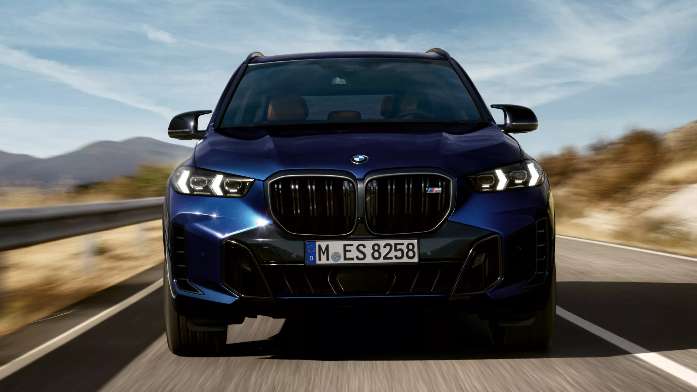

BMW cars are known for their luxury, performance, and innovative technology. They typically feature sleek designs, high-quality materials, and advanced driving dynamics. BMW offers a wide range of vehicles, from compact sedans like the 3 Series to luxury SUVs like the X5. Many BMW models come with powerful engines, state-of-the-art infotainment systems, and driver-assistance features. Overall, a BMW car is often synonymous with elegance, precision engineering, and a thrilling driving experience.